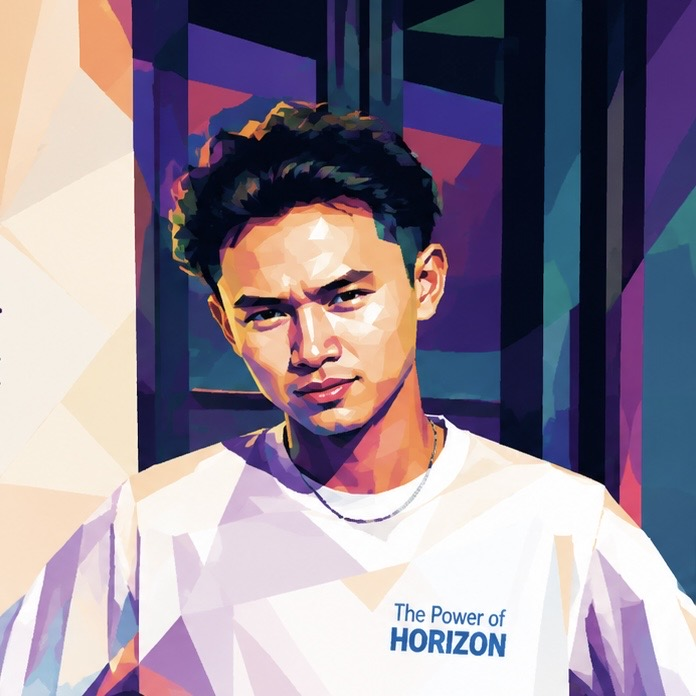

AVAILABLE FOR OPPORTUNITIES
COMPUTER SYSTEMS / IoT / CREATIVE
Technology
meets creativity.
Portfolio digital yang merangkum perjalanan, project, dan kemampuan yang sedang saya kembangkan.

ARYA PRADITHACREATIVE TECHNOLOGIST
FOCUSIoT
BUILDCREATE
TECH • IOT • CREATIVE • TECH • IOT • CREATIVE •
SYSTEM // ONLINE
01A little bit
ABOUT
A little bit
about me.
Saya adalah mahasiswa Sistem Komputer yang tertarik pada pengembangan teknologi, khususnya Internet of Things dan sistem berbasis mikrokontroler.
Selain sisi teknis, saya juga menikmati dunia visual dan creative work seperti videography dan editing. Saya percaya project yang bagus bukan hanya berfungsi, tetapi juga mudah dipahami dan menarik untuk dilihat.
02Things I
CAPABILITIES
Things I
work with.
IoT / ESP3285
Arduino80
Python70
Flutter65
Videography85
IoTCODECREATIVESYSTEM
03Projects with
SELECTED WORK
Projects with
purpose.
01IoT
◈
01 / IoT
Smart Farming
Automatic spraying system ↗02SMART
◇
02 / Research
Smart Trash Bin
Organic waste processing ↗03ML
▦
03 / Machine Learning
Embedded ML
Image classification ↗04 / VIDEO
04 / Creative
Videography
Pemasangan alat IoT — Bedugul ↗0SELECTED PROJECTS
0CORE SKILLS
0TECH AREAS
∞LEARNING MODE
04 / CONTACT
Have an idea?
Let's talk.
Terbuka untuk belajar, berkolaborasi, dan mengembangkan project baru.
✉ aryaditha13@gmail.com
☏ 0859 3115 2688